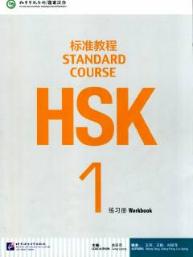

H1Xitoy tili HSK 1 darajasi uchun rasmiy mashqlar to'plami va darslik.
Ushbu kitob xitoy tili darajasini aniqlash bo'yicha HSK 1 imtihoniga tayyorgarlik ko'rish uchun mo'ljallangan rasmiy mashqlar to'plamidir. Unda boshlang'ich darajadagi so'z boyligi, grammatika va yozish ko'nikmalarini mustahkamlash uchun turli topshiriqlar jamlangan. Kitob Pekin til va madaniyat universiteti mutaxassislari tomonidan ishlab chiqilgan.